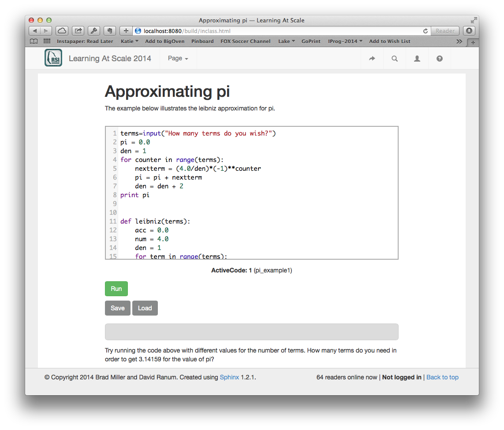

You don't have to write a whole book to use the Runestone tools. Your task can be as simple as having a few examples ready to demonstrate to the class, or as complex as an entirely new book.
If you want to use one of our free and open source books for your class, you can do that too. You can create a book for your own course, or simply use one of the books in our library
Suppose you wanted to have an example program that you could start class with, and then edit and change during the course of the class. Here is how you would create a simple page for you and your class to load into the browser and experiment with.
Approximating pi
================
.. activecode:: pi_example1
terms=input("How many terms do you wish?")
pi = 0.0
den = 1
for counter in range(terms):
nextterm = (4.0/den)*(-1)**counter
pi = pi + nextterm
den = den + 2
print pi
def leibniz(terms):
acc = 0.0
num = 4.0
den = 1
for term in range(terms):
nextterm = num/den * (-1)**term
acc = acc + nextterm
den = den + 2
return acc
Try running the code above with different values for the
number of terms. How many terms do you need in order to get
3.14159 for the value of pi?
After you install the RunestoneTools, as described below. You can save the example above to a file. When you run the paver build command, you will get an html file that you can load into your browser. It will look like this:

A Short Quiz ============ Answer the following two Questions .. mchoicemf:: question1_1 :answer_a: Python :answer_b: Java :answer_c: C :answer_d: ML :correct: a :feedback_a: Yes, Python is a great language to learn, whether you are a beginner or an experienced programmer. :feedback_b: Java is a good object oriented language but it has some details that make it hard for the beginner. :feedback_c: C is an imperative programming language that has been around for a long time, but it is not the one that we use. :feedback_d: No, ML is a functional programming language. You can use Python to write functional programs as well. What programming language does this site help you to learn? .. mchoicema:: question1_2 :answer_a: red :answer_b: yellow :answer_c: black :answer_d: green :correct: a,b,d :feedback_a: Red is a definitely on of the colors. :feedback_b: Yes, yellow is correct. :feedback_c: Remember the acronym...ROY G BIV. B stands for blue. :feedback_d: Yes, green is one of the colors. Which colors might be found in a rainbow? (choose all that are correct)
paver build command will create a nice looking html file for you in the build directory under the template project. Once you have built you can preview that file directly in your browser.paver deploy to publish your latest class materials.